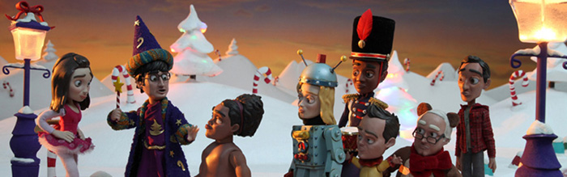

Hello.
My name is David Kelly and I am a first year Computer Science Student and IT Blanchardstown, Dublin, Ireland. I suppose I have created this website to showcase what I have learned since beginning this course and to see what does and doesn't work on a live web page.
e.g correct grammer and misspeling, complimenting colour schemes and subtle styles.
This website might be empty at this moment in time, but I will be updating it and keeping my skills in check on a regular basis. feel free to drop by and nose through any or all things and be sure to visit Trip City when it is completed, It will surely be funky if nothing else
I suppose Bronchausvision has got to go at some point, it's a silly old name for my portfolio page. For the moment though I will have the websites and projects I have created on that page. Fans of Community make sure you check out the glossary page (it's streets ahead).
 Just click the picture above and it'll take you straight to it. enjoy.